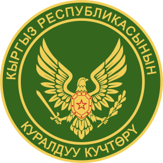

Армия
Эмблема Вооружённых сил КР
Основание 29 мая 1992 года Подразделения Сухопутные войска Киргизии Силы воздушной обороны Государственная пограничная служба Национальная гвардия Командование Верховный главнокомандующий Садыр Жапаров Министр обороны Бактыбек Бекболотов Военные силы Призывной возраст 18–27 Срок службы по призыву 1 год Свободное население 3 069 582 чел. Годны к военной службе 2 425 572 чел. Ежегодно вступающих в призывной возраст 114 357 чел. Занято в армии 10 900 (2022 год)[1] Запас 50 000 Финансы Бюджет 130 миллионов долларов[2] Промышленность Иностранные поставщики Россия Китай США Турция